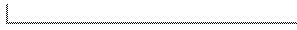

The template parameter Traits is the Delaunay triangulation traits class. It defines the primitives the Delaunay triangulation uses.
CGAL provides some traits class implementations for the CGAL kernel
that are described in section  . Customizing
own triangulation traits classes can be done according to the
requirements given in section
. Customizing
own triangulation traits classes can be done according to the
requirements given in section  .
.
#include <CGAL/Delaunay_triangulation.h>
The modifying functions insert and remove overwrite the inherited functions to maintain the Delaunay property.
|
| ||
|
|
||
|
| |||
|
Introduces an empty Delaunay triangulation DT.
| |||
| |||
|
Introduces a Delaunay triangulation DT that is initialized
with the vertices and faces that are linked to vertex v. If
v has no incident face the triangulation consists only of
v. Otherwise v must be the vertex at infinity.
| |||
|
|
| |||
| Inserts point p. If point p coincides with an already existing vertex, this vertex is returned and the triangulation is not updated. Optional parameter f initialized the location. | ||||
|
|
| |||
| Same as above. Additionally, parameter lt describes where point p was located before updating the triangulation. | ||||
|
|
| |||
| Equivalent to insert(p). | ||||
|
| ||||
|
|
| |||
|
Inserts the points in the range first,
last. Returns the number of inserted points.
Precondition: The value_type of first and last is Point. | ||||
|
|
| |||
| Removes the vertex from the triangulation. | ||||
|
|
| |||
| Returns any nearest vertex of p. f may be used to initialize the location | ||||
|
|
| |
| Returns the side of p with respect to the circle circumscribing the triangle associated with f | ||

|
|
| |
| Tests the validity of all faces and verifies that the Delaunay property and the orientation of the triangles. This method serves mainly for debugging Delaunay triangulation algorithms designed by the user. | ||

typedef CGAL_Homogeneous<leda_integer> Rep;
typedef CGAL_Triangulation_euclidean_xy_traits_3<Rep> Terrain;
typedef CGAL_Delaunay_triangulation_2<Terrain> Delaunay;
{
Delaunay DT(Terrain());
while(cin){
CGAL_Point_3<Rep> p;
cin >> p;
DT.insert(p);
}
CGAL_Geomview_stream G;
G << DT;
}
Insertion is implemented by inserting in the triangulation, then performing a sequence of Delaunay flips. The number of flips is O(d) if the new vertex is of degree d in the new triangulation. For points distributed uniformly at random, insertion takes time O(1) on average.
Removal calls the removal in the triangulation and then retriangulates the hole but this time using the Delaunay criterion. Removal of a vertex of degree d takes time O(d^2), which is O(1) for a random vertex in the triangulation.
A nearest neighbor is found in time O(n) in the worst case, but O(1) for vertices distributed uniformly at random, and any query point.